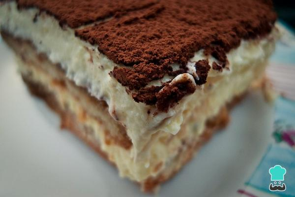

Tiramisu :
materiales
-500 ml de agua. -4 cucharadas colmadas de café granulado. -5 cucharadas de amaretto (o a gusto). -1 cucharada de azúcar. -4 yemas de huevo. -250g de azúcar flor. -1 queso crema. -100g de crema de leche. -500 ml de crema para batir muy fría. -500g de galletas de champaña -Chocolate en Polvo Gourmet para espolvorear.
preparacion
¿Cómo preparar el café? Hervir los 500 ml de agua. Verter sobre un bol y agregar el café. Revolver bien. Añadir el amaretto y azúcar y revolver. Reservar. En un bol, batir las yemas con 125g de azúcar flor, hasta que la mezcla quede uniforme y de un color amarillo claro. Reservar. En otro bol, batir el queso crema previamente molido con la crema de leche, hasta que quede una mezcla suave. Reservar. En otro bol, batir la crema para batir (recién sacada del refrigerador) e ir agregando de a poco 125g de azúcar flor, sin parar de batir. La crema tiene que quedar firme, cuidando que no se corte. Juntar la mezcla de las yemas con la mezcla del queso crema con movimientos envolventes, hasta que quede una mezcla homogénea. Agregar esta mezcla de a poco a la crema batida, con movimientos envolventes y cuidando que quede todo bien mezclado.
Roscas:
Ingredientes -3 Tazas de harina cernida -1 1/2 Cucharadita de POLVO DE HORNEAR IMPERIAL NESTLÉ -1/2 Taza de azúcar flor cernida -50 g de mantequilla -1 Huevo -2 Yemas -1 Cucharadita de ralladura de limón o naranja -1 Cucharada de ron, coñac o aguardiente (optativo) -Azúcar flor para espolvorear -Aceite para freír . Instrucciones Paso 1 1.- En un bowl mezcla la harina con el POLVO DE HORNEAR IMPERIAL NESTLÉ y el azúcar flor; añade la mantequilla a temperatura ambiente, el huevo, las yemas, la ralladura y el licor. Amasa hasta formar una masa lisa, en caso de quedar demasiado seca, añada pequeñas cantidades de agua. Paso 2 2.- Uslerea sobre un mesón previamente enharinado dejando la masa de unos 3 mm. de grosor. Luego corta rombos de 10 cm de largo por 5 cm de ancho. Hazles un corte vertical en el centro de 2 ½ o 3 cm. de largo e introduzca en este orificio una de las puntas del rombo cuidadosamente hasta el otro lado. Repite este procedimiento hasta acabar toda la masa. Paso 3 3.- Una vez listo fríelos cuidadosamente, introduciéndolos lentamente en una sartén con abundante aceite a temperatura media alta (no muy caliente) una vez levemente dorados y cocidos, retíralos de la sartén, escúrrelos y déjalos sobre papel absorbente. Al momento de servir espolvoreales azúcar flor.